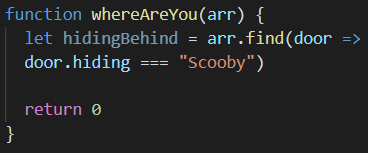
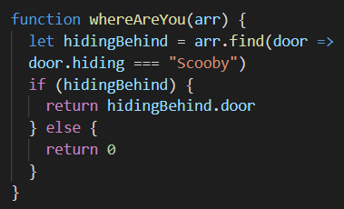

24 September 2021
Problem Solving
Code Readability
Code readability means to write and present your code in way that is understandable and easy to read for others.
Code readability is an important skill to have as a developer. Often you are not the only person who will be working on your code. In the book The Art of Readable Code by Dustin Boswell and Trevor Foucher, the key idea they put forward is:
Code should be written to minimize the time it would take for someone else to understand it.
Being able to write readable code not only allows you to understand and read what you have written, but it also allows others to do the same which makes it easier to debug, maintain, and modify the code.
There are several habits you should be following when writing readable code.
- Correct formatting and indentation of code
- Consistent naming of things such as functions, variables, classes, and id’s that way you know exactly what it is doing/ what it is for.
- Use smaller segments – divide code into easier to read and understand sections.
- Thoughtful commenting – only comment a more complicated section to give others background of the code.
- Don’t repeat yourself
- Clean code – keep other developers in mind when writing your code. Keep the code easy to maintain and extendable.
Problem Solving & Pseudocode
Problem solving is an essential skill for developers. There are several problem-solving techniques that can be used:
Pseudocode
Pseudocode is a coding specific problem-solving technique, that can make going through your code easier. Pseudocode is not a programming language, but rather a way of writing programming code in English. It involves writing short and general comments that will tell you how the code will eventually look, rather than long descriptive sentences.
The Rubber Ducky Method
The rubber duck method basically involves explaining the code line-by-line to an inanimate object to help the developer debug their code. By explaining to your inanimate object what your code is supposed to do. By going into detail, you are often able to pick up what is going wrong and causing the errors. Thus, you are able to find the solution yourself without interrupting others from their work. This method is a useful technique as it enables you to evaluate the problem from a different perspective and can help provide a deeper understanding of how your code works or why it isn’t working.
Read Error Messages
Reading error messages can help you solve problems you are experiencing. A good error message is made up of three sections: identification of problem, cause of error, and possible solution. If written correctly, you should be able to use the error messages to figure out what is wrong and how to fix the issue.
Console.logging
Using console.log() is another problem-solving technique in coding. It writes a message to the console, which can help with testing the written code. It allows you to see if what you are trying to console.log is actually working.
Googling
Googling is a useful way to help you solve problems. It allows you to access a wide range of information that will either provide you with the exact answer you are looking for or at the very least provide you with some form of guidance in solving your problem. Chances are that whatever problem you are trying to solve, there have been lots of people who have come up against the same issue.
Trying Something
Sometimes just trying something works. The only way to solve a problem is by testing out different things to see if returns the solution you want. If you don’t try, then you’ll never know if it works!
Ask Others For Help
Asking for help from your peers/coaches/ is also a great problem-solving technique. Your peers could also be struggling with the same problem and working together and bouncing ideas of each other could help you both. Having someone else look at your code is useful as they might pick up on errors in your code that might be causing it to not work. It can also help hearing the problem or solution expalined by someone else.
Improving Your Process With Reflection
Taking time out to reflect if you come up against a problem is also a useful problem-solving technique. Sometimes when you are trying to solve a problem, it is easy to get stuck in your own head focus on certain aspects. Reflecting can allow you to focus on what parts you are struggling with, sort out what you do understand from what you don’t, and figure out at which point things stop making sense.
Personal Experience
A time I got blocked on a problem was during the Sprint 4 JavaScript Kata’s whereAreYou exercise. For this exercise we were required to find the door number that Scooby is hiding behind. The problem I had was constructing the code. To help me solve this exercise I used google to look up how to use the .find() method to solve this problem. Using Google I was able to find resources that helped me to write part of the function statement:
The next problem I came across was writing a code that returned the door number Scooby was hiding behind. Throughout the process I felt frustrated at times. It made me question if I was actually understanding the question and had written the initial part of the code correctly.
In my weekly catch-up with my facilitator, I was able to ask for help in trying to solve this problem. He was firstly made sure that I understood what the problem was trying to solve. Then helped me to understand that a simple if…else statement would be required. With guidance I was able to construct the if…else statement and add it to the code I already:
With the help of google I was able to get to construct part of the code, and by reaching out to my facilitator for help I was able to understand what I was missing in order to solve the problem. From this experience I learnt that when you come up against problems, sometimes you are on the right path, but may just need help getting to the finish line.